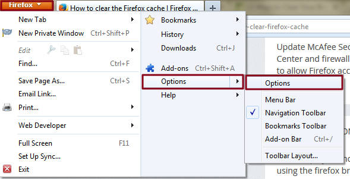
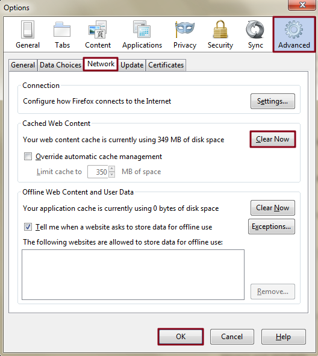

Step 1: Open settings — Open Mozilla Firefox, click the main Firefox button in the upper-left corner of the browser window and select Options from the right side of the resulting drop-down menu. Afterward, click the Advanced tab located on the right-hand side of the navigation bar and select the Network sub-tab underneath.

Step 2: Clear the browser cache — Click the Clear Now button within the Cached Web Content section near the top, then click the OK button on the bottom-right corner of the window.
